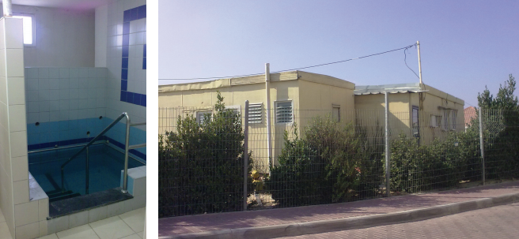

The Chassid Who Fought the Forces of Darkness
R’ Alexander Lokatzky a”h was a fearless soldier in the Rebbe’s army. * He told me the story of how he built a mikva in Marina Roscha, in the heart of Moscow, under the watchful eyes of the KGB. * And also about the amazing miracle story that happened with the completion of the mikva at yishuv Neve Daniel, which he initiated and saw through to completion. * Part 2 of 2

One of the first religious symbols that the communists worked to uproot was the mikva, the foundation of our nation’s purity and its guarantee of continued existence. With tremendous fury, the Yevsektzia (the Jewish department of the secret police) fell upon mikvaos in cities throughout Russia and closed them. Sometimes, they even had them filled in with cement. To the communists, a mikva was more dangerous than a shul, evidence of which you can read in documentation that appears in Toldos Chabad b’Russia HaSovietis.
The Chassid Rabbi Yaakov Zecharia Moskolik wrote poignantly in a letter he sent to the Rebbe Rayatz when the Rebbe was out of Russia: “They are declaring mikvaos everywhere unfit, and also on shuls there are many decrees to shut them down. Perhaps it would be worthwhile calling for a public fast where you are, over the sufferings of the Jewish people.”
The situation did not improve during the decades that followed. A mikva was a rarity. In the few places where there was a kosher mikva, it was located in some hidden place, in the worst conditions, so that using it in the winter, in the freezing cold, entailed danger to life. In the history of that period, incredible stories are told about mesirus nefesh for immersing in a mikva.
One of the mikvaos that was built over the years, under the watchful eyes of the KGB, was located in the old shack of the Marina Roscha shul in Moscow. The construction of the mikva was accompanied throughout by heavenly instruction and guidance from the Rebbe.
The one who oversaw the construction from beginning to end was R’ Alexander (Sasha) Lokatzky a”h, one of the Lubavitcher activists in Moscow. He operated fearlessly, with lots of emuna, and carried out the Rebbe’s instructions that came via emissaries sent by Ezras Achim.
R’ Alexander told me about the construction of the mikva in an interview a few years ago:
“I am a foodstuffs engineer by profession, but once I became a refusenik, I was fired and began working as a maintenance man.
“One morning in Av 1984, Rabbi Gershon Grossbaum knocked at my door. He is an expert on mikvaos. R’ Grossbaum, who came to Russia on behalf of Ezras Achim in New York, said, ‘The Rebbe sent me here to build a mikva in Marina Roscha and the Rebbe said to start the work immediately.’ Ezras Achim also sent along expensive electronics for me to sell on the black market so I could use the money for the expenses of construction.
“I was flabbergasted. Building a new mikva in the capital of Russia was an act of open rebellion against the government. I asked him how I could begin building, especially when it was the Nine Days. His answer was that since the Rebbe said to start building the mikva immediately, we had to start building before Tisha B’Av.
“We sat together and came up with a basic plan about how to build a mikva that would be hidden. When I started thinking practically, I wondered how we could start working on this complicated project within four days. From where would I get such a large amount of building materials that were unobtainable on the black market? That large an amount of bricks and building material was obtained only from contractors and only after careful checking and marking down of where each item was going. Where would I get a team of professional workers? I had no resources, and in general, Marina Roscha had no infrastructure for building a mikva.
“After we finished the plans, R’ Gershon said we would meet again tomorrow, then he left. I stood in a corner of the shul and poured out my heart to Hashem that He should help me. The date was 6 Av 5744.
“I finished my prayer and at four in the afternoon I went home. Outside the yard of the shul, there were Russians hanging around, waiting for a liquor store to open. I was about to close the gate when I noticed someone dressed like a construction worker. An idea flashed into my mind and I asked him, ‘Would you like to earn a lot of money?’ Of course, he said yes.
“I explained that I had to quickly build a certain room and I made him an enticing offer: If he would get ten workers for me to do the job quickly, I would pay each of them well and would add a bottle of vodka for each one. Within half an hour I had ten workers with tools. We didn’t waste a minute. All night we dug a pit in the floor of one of the rooms of the shul.
“The following morning, R’ Grossbaum came to the shul and asked me whether I had come up with any idea. By way of replying, I opened the door to the room whose floor we had dug up.
“I had to stop him at the last minute from falling into the pit … He was astounded and moved.
“But then new problems cropped up. The walls of that room were made of wood. In their new role as walls of a mikva, they had to contain a water pipe, so they had to be rebuilt out of stone and cement. If that wasn’t enough, right across from the shul was a large KGB center, and a special division frequently checked on the shul. We knew that the minute they noticed construction going on, they would stop it.
“In retrospect, it became clear how far-reaching was the Rebbe’s vision. It wasn’t happenstance that the Rebbe said the construction should begin on 6 Av, for on that very day all the people in that KGB division went on vacation for a few weeks and a major obstruction was removed. And the government-appointed gabbai of the shul, whose job it was to oversee the people in the shul and what went on there and report to the authorities, also went on vacation. The fear of being reported on was allayed, and we were overjoyed.
“But now we had another problem: how to get enough cement blocks and other construction material within a few days. We couldn’t just walk into a store and buy it. That was not realistic.
“Again, help came from an unexpected source. A personal friend of mine, by the name of Sholom Yanatovsky, was one of the people who davened in the shul. He was a disabled war veteran and therefore had special privileges which included a shorter wait time for building permits. R’ Sholom endangered himself and gave me all his papers. I prayed they would believe me and went to the company that sold construction materials.
“When I arrived, I was happy to discover that the boss was on vacation and his substitute was a person I could work with on the quiet. Aside for paying for the materials, I gave him a nice bribe and he immediately signed the documents for the release of the bricks. Only two hours later, I loaded a semitrailer with bricks, with two additional hook-up trailers. The truck parked opposite the shul and blocked the street. The KGB on the other side of the street could not help but notice what was going on. I was very apprehensive. I immediately mobilized all the workers and arranged another group of Jewish workers, and the two groups passed the bricks into the building.
“The next morning there was no sign of what had taken place at night. The bricks were well stored away inside the building. And that is how, within two days, I had all the bricks needed to build a mikva, a miracle in Russia of those days!
“The ten workers that we had arranged immediately got to work. Together with the workers, I quickly prepared the molds for the pouring of the cement and the metal supports, inserted the pipe into the mold, and poured the cement floor and the walls for the pit of the mikva, which left us with a finished skeleton. As the work progressed, we did not skimp to make the place beautiful. In the end, we had a magnificent mikva.
“The entire process of the building of the mikva took just sixteen days of work. Incredible! On 13 Elul the work was done.
“By the Rebbe’s instruction, Rabbi Moshe Posen of London came to certify the kashrus of the mikva and to check the general mikva situation in Russia. All we had left to do was wait for the first rains.”
A DETERMINED BATTLE FOR PURITY
KGB agents considered the building of the mikva a dangerous precedent and were concerned that it signaled an awakening of Jewish life in the Soviet Union. The truth is that the Soviets were definitely right. In hindsight, the mikva in Marina Roscha led to a huge Jewish awakening in Moscow, and in other Russian cities many Jews were inspired to build mikvaos.
“One day, KGB agents showed up to see what was going on in the shul. Unfortunately, they found the new mikva. That same day, I was called in for interrogation. I was informed that the entire shul would be shut down Thursday night. I still had no idea what they had planned. They did indeed shut down the shul on Thursday night and opened it for the regulars only for Shabbos.
“At first, I did not understand their intentions. Soldiers stood on guard. When I went to the shul before Shabbos, I saw two locks on the mikva door; one was ours and the other was theirs. My heart was telling me the worst, but the worshipers tried to reassure me. As soon as Shabbos was over, I broke one of the windows and went into what was the mikva. To my astonishment, I saw there was no mikva! They had filled it up with beach sand and poured over it a cement floor five centimeters thick, and covered the cement with a strong and high quality wooden floor that covered the entire room. Then and there, I resolved that this nice wood would be the paneling for the Torah reading area in the shul.
“Whoever stood there at the time was shocked. My first thought was to demolish everything and start cleaning out the pit, but the elders in the place convinced me to restrain myself from taking action because of the danger. There was no limit to my heartache. My eyes were not the only ones that streamed tears, everybody else who was there was also overcome.
“There wasn’t much that could be done in response to this despicable act. Sunday morning, I called Moshe Levertov in New York, the director of Ezras Achim, and told him what they did to the mikva. He asked me to calm down and promised to ask the Rebbe what to do.
“A while later, I received a call from R’ Levertov, who told me that the Rebbe said not to publicize this story in the media; such publicity could be harmful. The only thing I could do from that point onward was to show the sealed pit to all the representatives of world Jewry who came to visit.
“The KGB did not let up. At one point, they tried to drum up charges against me, claiming that I had stolen the building materials. One day, they took a ceramic tile from the mikva and searched every building site in the area for that type of tile, but to my good fortune I had receipts for all of the building material.
“When they saw that the purchase of the materials was all done legally, they tried to investigate who the workers were and how they were paid. They could not understand how I got hold of workers. There were not a lot of options; either we had taken workers away from their regular jobs, which would be a crime of skipping work, or else we took workers who did not report their earnings. In general, they wanted to know from where we had the means to pay for everything, and I of course claimed that the money came from the pushka in the shul.
“Although the Rebbe had instructed not to make a tumult about what happened, the members of Ezras Achim in New York worked behind the scenes in order to exert diplomatic pressure on the Russians. They reached out to their contacts in the US government and presented the matter to them. At that time, there were talks between the Russian and American governments about nuclear arms reduction. During the meeting that took place in Geneva, the American representatives asked their Russian counterparts why they should be trusted if they are fighting the Jewish community in such a childish manner and closing down their mikva.
“In the month of Iyar 5745, we were informed that we have permission to refurbish the mikva, along with an apology stating that it was only due to the actions of a few irresponsible functionaries that it was destroyed.
“When they informed me about the permit to open the mikva, I said that the one who sealed it up should be the one to open it up again. They stubbornly refused, but I stood up to them resolutely.
“Eventually, they caved and were forced to come themselves and reopen the mikva. In order to minimize their embarrassment, they did the work under the cover of darkness. They took apart the flooring, broke up the poured cement, emptied out the sand, and returned the mikva to its original state. To us, this was a complete victory. The high quality wood flooring was left out in the yard of shul, which provided the opportunity to fulfill my earlier decision to use this flooring as paneling for the bima in the shul.
“I saw with my own eyes how the bracha of the Rebbe does not fall short, and if the Rebbe asked to establish a mikva, then the mikva will prevail against all odds, in a manner of ‘even his enemies will make peace with him.’”
TSKHINVALI, SAMARKAND, TBILISI, DUSHANBE, AND MORE
R’ Alexander did not simply suffice with the mikva that he built in Marina Roscha, as the Rebbe saw to it that he undertake similar missions throughout the Soviet Union. He was more than happy to tell about them:
“One day, a pair of bachurim showed up at my home, Yona Pruss and Yerachmiel Belinov. They conveyed instructions from the Rebbe to travel to Tskhinvali, a small town in Georgia near the border with Chechnya, and to help out there with the building of a mikva. There was a small Jewish community without a mikva, and the Rebbe instructed that I travel there to build a mikva. How did the Rebbe know that there was an urgent need there for a mikva? I have no idea. The only thing that I was told was that I would find a rabbi there by the name of Chacham Chaim Avraham.
“I packed a bag and flew there. As soon as I arrived I met the local rabbi, and we went together to check out the mikva. The mikva was in bad shape. I immediately saw to getting construction workers and I instructed them about what needed to be done. We explained to them the importance of the work, and I left a sufficient amount of money in the hands of the local rabbi, Rav Chaim Avraham Mansharov. I flew there a few times in order to supervise the work, and afterward I arranged for a local woman to operate the mikva properly.
“Another time, I was approached by the bachurim, Yona Pruss and Berel Lazar, with instructions and money for building a mikva in Samarkand. The mikva that was already there, which was built by the Chassidim of the previous generation, was old and unusable. The first problem that we encountered when we arrived there was to find a suitable location to build.
“Everybody was petrified of getting involved, except for one woman, the mother of R’ Emmanuel, a young man who served as the rabbi and shochet. She agreed to have the mikva built in her yard. The work there was especially difficult. The Jews there lived in a sort of old world ghetto, which was very crowded and almost impossible for a truck to get into. In response to the queries of many bystanders as to what we were building, I answered that it was a storage facility. I traveled there five or six times, in order to supervise the building work which was being handled by R’ Emmanuel.
“When the mikva was ready, my wife joined me on the next flight, and she worked hard on explaining the importance of the mitzva of observing family purity and using the mikva. During that period, there were also instructions to build a mikva in Tbilisi in Georgia, and in Dushanbe in Tajikistan, not far from the border with Afghanistan.
“From time to time, some shliach or another would arrive with a message to travel to some place or another to check out the state of the mikva there. In this manner, I traveled to many cities based on the instructions I received. I fixed what needed fixing, and in certain places had to build the mikva from scratch. I also received instructions to build or fix up mikvaos in Kiev, in Leningrad, and even in the great synagogue in Moscow on Archipova Street.”
The conclusion that R’ Alexander took from all of the above, in his words, “From these activities it became clear to me that the Rebbe’s reach extends to the entire world. He knows what is going on in every place in Russia, even those places where there are no Chassidim, and even places where they never even heard of the Rebbe.”
All of these activities did not elicit any response from the government?
“Not always. I was called in many times for interrogations about things that I did, and at time even for things that I had not carried out.
“An amazing miracle happened to me when I came to Samarkand in connection with the mikva. I was already heading to the exit of the airport terminal, when I suddenly noticed a person standing next to a car waiting for me with three policemen nearby. I saw clearly that they were waiting for me, so I looked to the sides but saw that there was nowhere to run. In that instant, a brazen idea popped into my mind. Without hesitation, I walked straight towards him in a threatening manner. He looked at me for a second, and then began to leave the area.”
CONTINUING THE CONSTRUCTION IN ERETZ YISROEL
At the end of the 80’s, R’ Alexander asked permission from the Rebbe to leave the USSR, and he received a positive answer. He wanted to come to Eretz Yisroel to settle permanently, not just for a visit as he had considered before.
For many years, the Lokatzky family had lived on the ninth floor of a building, and their dream was to live in a house at ground level:
“After half a year of living in the immigrant hostel, we arrived at Neve Daniel. We were quickly enamored by the place. The yishuv is situated on a mountain peak that is over three thousand feet high, to the east you can see the Dead Sea, and to the west you can see the Mediterranean Sea, the Temple Mount and Chevron.”
Although they had finally arrived in the land of milk and honey, it was not for the purpose of resting. Anybody who knew R’ Alexander, knows that taking it easy was the furthest thing from his personality. Even in his new pastoral home, he looked for ways to contribute, to do and to build. It was not long after he arrived there that he established a Chabad minyan in the yishuv, and later put up an impressive and well-appointed shul.
He did not stop there, and with the cooperation of the rabbi of the yishuv, R’ Matanya Ben Shachar, who appreciates and esteems the Rebbe and the teachings of Chassidus, a mikva was built on the yishuv according to the specifications of the Rebbe Rashab, along with a beautiful mikva for men.
“The mikva, which is an exact copy of the mikva in Marina Roscha, down to the ceramic tiles, is used daily by a few dozen men from the yishuv and nearby yishuvim. The success of the project was accomplished through the joint efforts of other Chassidim, including R’ Eliyahu Adinov, R’ Shimshon Rubesky, R’ Berel Friedman, and R’ Moshe Zuckerman, who helped a great deal. There is another Jew by the name of R’ Michoel Fuerer, a policeman by occupation, who from the very first day that we arrived in the yishuv was a partner in our activities, and today there is a Chassidus class in his home.”
THE LIFE SAVING MIRACLE
R’ Alexander worked long and hard to try to convince those in authority to allow for the building of a mikva for men in Neve Daniel. Since there is only a small population on the yishuv, and the number of Chassidim living there who are particular about immersing on a daily basis is quite small, those in charge were not too happy, to put it mildly, to approve such a project. However, nobody could withstand the tremendous drive of R’ Alexander, who personally saw to acquiring the necessary funds, and eventually the mikva went up after many years of planning and construction.
Over the years, those residents who were particular about immersing in honor of Shabbos would go during the summer months to the spring that ran near Neve Daniel, where they would immerse in its sparkling rushing waters.
On the first Friday that the mikva was open for use, 27 Sivan 5766, the residents switched their place of immersion to the new mikva which R’ Alexander had built, and which had just finished construction that week. At that exact time, a loud explosion rocked the homes of the yishuv. The security forces rushed to the scene and went in search for the source of the explosion.
It turned out that a bomb had been hidden in the ground near the place in the spring where they had been immersing up to that very day, with the Jews as the intended target. A quick investigation turned up the fact that the terrorists had observed the Jews and discovered that a group of them would come to that place every Friday to immerse themselves, and they had planted a powerful bomb at the site in advance. Thanks to the new mikva that was built by R’ Alexander Lokatzky, there were no serious injuries.
An open miracle…
Menachem Ziegelboim. "The Chassid Who Fought the Forces of Darkness." Beis Moshiach, no. 1125 (July 3, 2018).